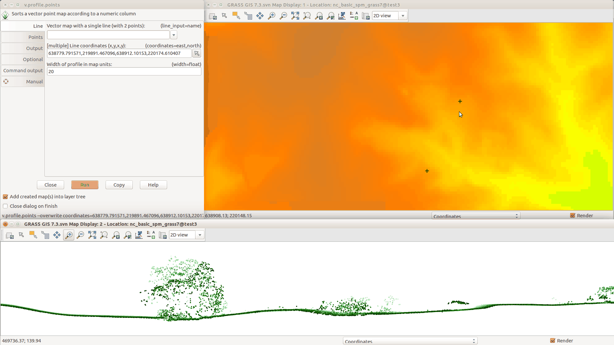

DESCRIPTION
v.profile.points creates profile (transect) from vector point
map or a lidar point cloud stored in a LAS file.
Figure: Profile (transect) of a lidar point cloud, closer points are
darker, further points are lighter
Workflow in GUI
First Map Display should contain some base layers such as point density
raster or digital elevation model.
First Map Display should contain the resulting profile or profiles.
Optionally a grid overlay can be added.
The "Zoom to selected map layers" button in the Map Display toolbar
should be used to zoom to the newly created profile.
The coordinates option in the Line tab can be activated,
deactivated, or cleared during the work as need.

Figure: Creating the profile in GUI: running module from the top left
window; selecting line points in the Map Display in the top right;
resulting profile in the bottom.
NOTES
ASCII files such as CSV can be profiled after import and raster maps
can be profiles after conversion to vector points. It is advantageous
to limit the import or the conversion just to the area of interest
to avoid unnecessary overhead.
EXAMPLE
v.profile.points input_file=.../points.las output=points_profile width=5 \
coord=2090904,731231,2091435,731252
AUTHOR
Vaclav Petras, NCSU GeoForAll Lab
{kind=link}